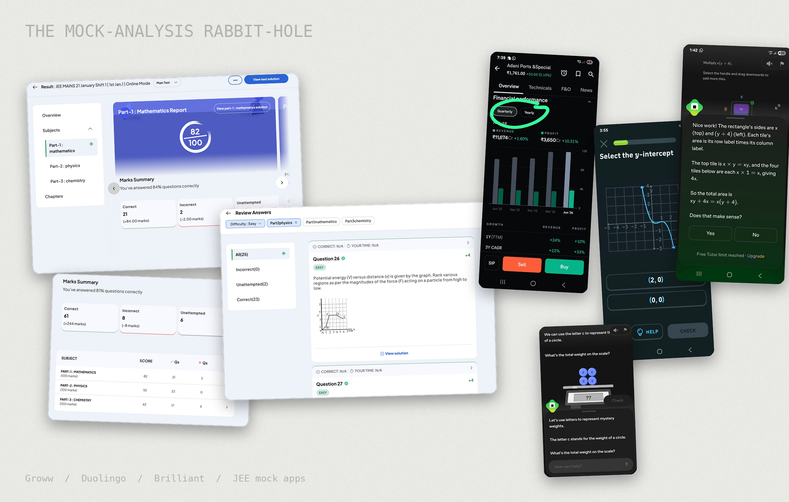
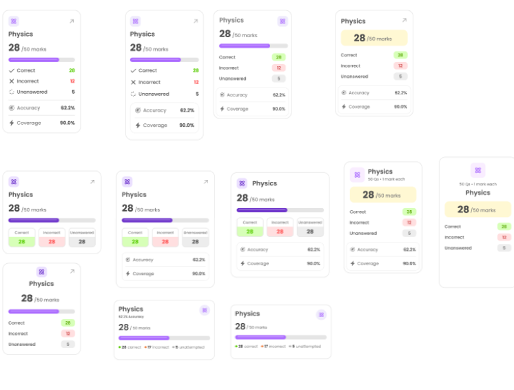
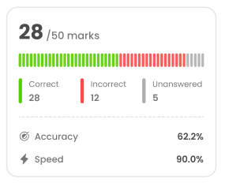

Turning a mock-test score into a study plan
ExamDuo's mock tests ended with a score and a pile of stats. I redesigned the analysis and question review so students see their result first, understand where they lost marks, and know which questions to fix next.
Over four weeks as the UI/UX intern, I took the project from auditing the old screens to final designs. The site gets a lot of mobile traffic, so I designed mobile first and handed the work to the team.
A mock test is where students find out what to fix
ExamDuo is an AI exam-prep app for JEE Mains and CAT, with practice questions, doubt solving and timed mock tests. After every mock, students land on an analysis page. The founders wanted that page to do more than report a score. Because the site gets a lot of mobile traffic, I started the redesign on mobile.
A lot of data, and no direction
I audited every old screen and found four problems standing between a student's score and a study plan.
Turning stats into a path
Learning from other apps and from the old screens
I worked from three inputs: an audit of the old screens, a teardown of apps students already use, and our mobile traffic.

Setting the order of the page
The old page gave every number the same weight. I reordered it so each section answers the question a student asks next, and the last one hands them the questions to review.
Trying many cards before locking one
For each component I explored a dozen layouts side by side, comparing how to show the score bar, the three counts and accuracy. I then went through them with the founders to decide which worked best.

Together we chose the layout below, a score with a segmented bar, three colour-coded counts, and accuracy and speed underneath. It was a team decision, and it had the clearest hierarchy, the least redundancy, the most meaningful colour and the most reusable structure.

Handing off to the team
I handed the designs to the founders and the frontend intern as Figma screens. I worked closely with the founders from the start, so the handoff held no late surprises.
From a pile of stats to a guided path
Each part of the page is shown before and after. The two sets come from different mock tests, so the subjects differ.
Result and percentile
The page now opens with one result card and a compact summary, followed by an estimated percentile. A what-if slider shows how a few extra marks would change it, giving students a concrete goal.
Subject breakdown
Every question gets its own tick on a segmented bar, coloured by result, with accuracy and speed below. Subject tabs replace the wide table that ran off the screen.
Time management
Time spent is shown against an ideal time for each subject, with the gap called out and a plain-language tip. A raw time means little on its own, so I gave it a benchmark. The gap shows at a glance whether a student was fast or slow, and the tip says what to do about it. It replaces a chart of tiny, crowded dots.
Quality of attempts
The old screen already tracked this, as repeated blocks of perfect, overtime and rushed attempts. I made it useful by plotting speed against result, which gives four kinds of attempt: efficient, inefficient, rushed and painful. Two simple questions, fast or slow and right or wrong, give four clear outcomes, and each one points to a different fix. This replaces repeated blocks that were harder to compare. Unanswered questions are split into skipped (opened) and missed (never seen), because each needs a different fix.
Question review
Students scan every question in a colour-coded grid or list, then open one to see their answer, the correct answer and the solution together. A status pill, a bookmark and a Mark Reviewed and Next action keep them moving.
AI insights
A short tip under the percentile and time cards turns the numbers into plain language, such as how much each extra mark adds to the percentile. These tips are AI insights, connected to the app's built-in AI bot.
Handed off to the team
I designed the new analysis and review end to end and handed the designs to the ExamDuo team. The redesign is now in development.
What I took from it
Order beats volume
Putting the result first and the action last mattered more than any single chart. The page should answer one question at a time.
Design for the moment after a hard test
Students open this page tired and anxious, so tone, colour and wording shape how they react. A target to aim for lands better than a bare number.
Close the loop
An insight only helps if the next tap leads to the questions to fix. Every section now points toward the review.
Ship fast, because startups don't wait
A startup needs designs now, not a perfect version later. I learned that a simple, clean design beats a complicated one, and gets to the team sooner.